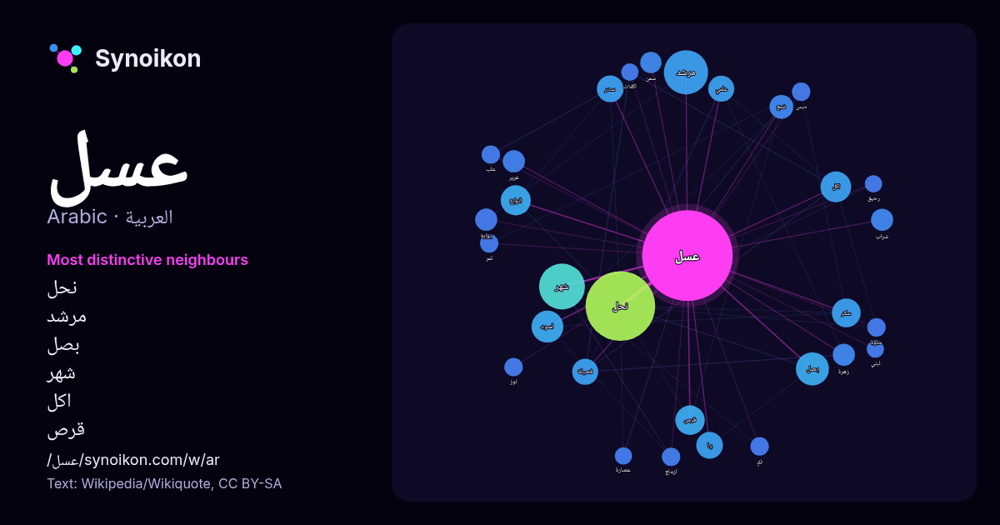

العربية · قائمة كلمات اليوم
عسل
“honey” · الكلمات الموجودة حولها في 813 ورودًا من ويكيبيديا, Wikiquote.

الجيران الأكثر تميّزًا
- نحل 120×
- مرشد 50×
- بصل 29×
- شهر 25×
- اكل 23×
- قرص 20×
- سدر 20×
- سكر 18×
- اسود 16×
- شمع 15×
- يا 14×
- غرير 14×
- شراب 13×
- فصيلة 13×
- سمن 13×
- زهرة 12×
- بوابة 11×
- دبس 9.8×
- ازعاج 9.8×
- علب 9.7×
× = كم مرة أكثر مما في نصوص ويكيبيديا العامة.
الجيران الأكثر تكرارًا
- نحل 129
- شهر 56
- مرشد 52
- فيلم 41
- بصل 29
- اسود 27
- اكل 25
- اسم 24
- انواع 24
- قرص 23
- سكر 22
- سدر 19
- موقع 19
- يا 19
- علمي 18
- فصيلة 18
- جنس 15
- شمع 15
- مادة 15
- مسلسل 15
في السياق
- العسل مادة غذائية حلوة المذاق ولزجة القوام تخرج من بطون وأجواف أنواع مختلفة من النحل، ولكن أجودها ما يخرج من نحل العسل. ينتج النحل العسل مما يجمعه من الإفرازات Wikipedia snippets · عسل
- كَعْب (الاسم العلمي: Mellivora capensis)، سمّاه المعاصرون غُرَيْر العَسَل أو غريراء العسل (الأخيرتان مترجمتان حرفيًا من الإنجليزية Honey Badger) أو الرَّاتِل Wikipedia snippets · غرير العسل
- عسل أسود هو فيلم مصري عرض عام 2010، بطولة النجم الكوميدي أحمد حلمي ويشاركه في الفيلم كلا من إدوارد وأنعام سالوسة وإيمي سمير غانم. يتحدث الفيلم «مصري سيد Wikipedia snippets · عسل إسود (فلم)
- مسميات عديدة مثل النبق أو العٍلب فيسمى عسل سدر أو عسل علب أو عسل نبق عسل السدر يعتبر اجود واغلى مقارنة بعسل الزهور وعسل المراعي الأخرى، ولعسل السدر فوائد كثيرة Wikipedia snippets · عسل سدر
- العسل البشكيري (البشكيرية: башҡорт балы) هو العسل المنتج في بشكيرستان. اسم «العسل البشكيري» علامة تجارية محمية. في عام 2005، حصل مركز بحوث تربية النحل Wikipedia snippets · عسل بشكيري
- خبز العسل المحمص ( باليابانية : ハニートースト)، والمعروف أيضًا باسم خبز شيبويا المحمص، وخبز الطوب المحمص، وهانيتو، هو حلوى يابانية نشأت في منطقة شيبويا خلال Wikipedia snippets · خبز عسل محمص
- عسل المانوكا أو المَنُوكَة (الإنجليزية: Mānuka honey) هو عسل منتج في نيوزيلندا وأستراليا، يحتوي على خصائص مضادة للبكتيريا، ويتكون بواسطة النحل الأوربي Wikipedia snippets · عسل المانوكا
- عسل Bal (التركية) تعديل - تعديل مصدري - تعديل ويكي بيانات عسل (بالتركية: Bal) هو فيلم من نوع دراما أُصدر في 2010. الفيلم من إخراج وسيناريو Semih Kaplanoğlu Wikipedia snippets · عسل (فلم)
كلمات أخرى
- أغنية
- إله
- تاريخ
- جبل
- جرس
- جزيرة
- جسر
- حديقة
- حصان
- حقيقة
- حياة
- خبز
- خريطة
- خريف
- ذهب
- زمن
- ساعة
- شاي
- شتاء
- صحة
- صحراء
- صمت
- صيف
- طبيعة
- طريق
- طعام
- ظل
- عائلة
- عاصفة
- علم
- عمل
- غابة
- فن
- قطار
- قطة
- قلب
- قوة
- كلب
- لغة
- ماء
- مال
- مدينة
- مرآة
- مطر
- ملح
- مناخ
- موت
- نجم
- والدة
حُسبت مسبقًا في 2026-10-09 بالإعدادات الافتراضية (±5 كلمات، مدوّنة متوسطة). يمكن للخريطة التفاعلية تحديثها ببيانات حية.
واجهة مترجمة آليًا؛ نرحب بالتصحيحات.